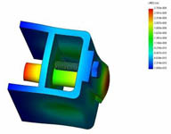

Ýki
ay önce tamamlanan projeyle firma, yýlda 100 adet yürüyen merdiven
üretmeyi planlýyor. Her yýl 20 milyon dolarlýk yürüyen merdiven
ithal eden Türkiye'de üretilen ilk yürüyen merdivenin el bantlarý,
basamaklarý ve motoru dýþýnda tüm parçalarýnda yerli malzeme
kullanýldý. Löher, önümüzdeki 5 yýl içinde tamamý yerli merdiven
üretmeyi hedefliyor. Þirketin Yönetim Kurulu Baþkaný Ali Aktaþ,
'3 yýldýr süren bu proje baþarýyla sonuçlandý. Türk sanayicisinin
her þeyi baþarabileceðini ispat ettim.' dedi.
Löher A.Þ. yürüyen merdiven tasarýmýnda ve mukavemet analizinde
SolidWorks yazýlýmýný kullanmýþtýr.
Aþaðýda görülen bu projeyle ilgili SolidWorks ekran görüntülerini
daha büyük görmek için resimlerin üzerini klikleyiniz.
Löher
A.Þ. ve yürüyen merdiven:
Ýlklere
imza atmak, her insanýn yaþamdaki en önemli hedeflerinden
biri. Gelecek nesillere daha güzel bir miras býrakmak, yaþamý
daha anlamlý kýlmak ve üretmek... Ýþte Ali Aktaþ'ýn yaþamý
da Türkiye'ye bir ilki kazandýrdý. 1940 yýlýnda Ýzmir'e baðlý
Seydiköy'de dünyaya gelen Ali Aktaþ, Ýzmir Mithatpaþa Sanat
Enstitüsü Metal bölümünü bitirdikten sonra asansör sektöründe
bakým ve onarým servisinde çalýþmaya baþlamýþ. Öðrencilik
yýllarýndan itibaren yeniliklere imza atmayý kendine hedef
olarak seçen Aktaþ, genç yaþýnda Avrupa'dan gelen ithal asansör
kapýlarýnýn ayný özelliklere sahip benzerlerini Türkiye'de
imalatýný gerçekleþtirmeyi düþünmüþ ve bu iþin elektrik eðitimini
de almak için Çýnarlý Endüstri Meslek Lisesi'nin açtýðý akþam
kurslarýna katýlarak Elektrik Teknisyenliði belgesi almýþ.
Çalýþmalara baþlayan Aktaþ, yýllar sonra Türkiye'nin ilk yürüyen
merdivenini üretmiþ.
1967
yýlýnda 20 metrekarelik bir atölyede çalýþmalara baþlayan
Aktaþ, soyadýný taþýyan Aktaþ Asansör'ü kurmuþ. Ancak bir
süre sonra, o dönemde sektörde yerli marka olmanýn getirdiði
dezavantajlar yüzünden firmanýn adý Löher olarak deðiþtirerek
daha geniþ bir yere taþýnmýþ.
Zamanla
büyüyen þirket, 1992 yýlýnda Çiðli Atatürk Organize Sanayi
Bölgesi'ndeki 5 bin m2 açýk, 2 bin 500 m2 kapalý alaný bulunan
bugünkü fabrika binasýna taþýnmýþ.
Ali
Aktaþ'ýn tek baþýna kurduðu Löher Asansör, bugün 125 kiþinin
çalýþtýðý, yýlda 250 adet Löher marka asansör imalatý ve montajýný
gerçekleþtirebilecek büyüklüðe ulaþtý. Þirket ayrýca yýlda
ortalama 400 adet asansör kabini, 5 bin adet tam ve yarý otomatik
asansör kapýsý ve çeþitli asansör malzemeleri üretiyor.
1994
yýlýnda ihracata da baþlayan Löher, aralarýnda Avusturya,
Almanya, Hollanda, Ýngiltere, Suudi Arabistan, Azerbaycan,
Hindistan gibi çok sayýda ülkeye ihracat da yapýyor.
Türkiye'nin
ilk yürüyen merdiveni yapma fikri 1997 yýlýnda doðmuþ. Bu
konuda araþtýrma-geliþtirme faaliyetlerine baþlayan Löher'in
bu projeyi gündemine almasýnda, hem yurtiçindeki talebin artmasý
hem de müþterilerden gelen talepler etkili olmuþ. Löher ilk
olarak konuyla ilgili olarak pazar araþtýrmasý yapmýþ ve sektörün
Çinli firmalarýn tekelinde olduðunu görmüþ. Bu firmalarýn
da yerli üretime destek vermek yerine temsilcilik açmayý tercih
ettiklerini gören Aktaþ, bu firmalardan hiçbirinin know-how
ya da yatýrým iliþkisine yanaþmadýðýný söylüyor.
Yurtdýþýndan
ithal edilen yürüyen merdivenlerinin teslimatýnýn en az 3-4
ay sürdüðünü belirten Aktaþ, "Bu süre zarfýnda inþaatlarýmýz
beklemekte ve müteahhit firmalarýmýz zor durumda kalmaktadýr.
Bunun yanýnda satýþ sonrasýnda meydana gelen problemlerde
yedek parça gereksiniminde yine bu parçalarýn yurtdýþýndan
gelmesinin beklenmesi yürüyen merdivenin çalýþmamasýna yol
açacaðýndan kurulu olduðu tesiste sýkýntý yaratmaktadýr"
diyor.
Maliyetin de çok önemli bir kalem olduðuna dikkat çeken Aktaþ,
bir yürüyen merdivenin ülkemizde maliyetinin her katta yaklaþýk
100 bin dolar, oysa yerli üretimin bu fiyatlarýn çok daha
altýnda olduðunu söylüyor.
"Bütün
bu araþtýrmalar sonucunda, projemizin ana amacý ülkemiz koþullarýna
uygun olarak dünya standartlarýnda tamamen Türk malý olacak
yürüyen merdiven tasarýmý ve üretimi yapmak, bu sayede döviz
çýkýþýný engelleyerek yeni bir sektör oluþmasýný saðlamaktýr"
þeklinde konuþan Aktaþ, böylece döviz kaybýnýn engellenmesi
ve yeni bir ihracat geliri yaratýlmasýnýn da bu projenin yararlarý
arasýnda olduðunu kaydediyor.
Aktaþ,
yürüyen merdiven sektöründe üretici firma sayýsýnýn az, talebin
ise fazla olmasý ve ülkemizin coðrafi konum olarak Ortadoðu,
Kuzey Afrika ülkeleri ve Türk Cumhuriyetlerini kapsayan ülkelere
yakýnlýðý dolayýsýyla bu pazardaki paylarýný artýracaklarýný
düþünüyor.
Löher'de
Ar-Ge çalýþmalarý yürüyen merdiven projesi ile hýzlanmýþ.
Projenin gündeme gelmesi ile TTGV'den destek için baþvuruda
bulunduklarýný belirten Aktaþ, baþvurudaki en büyük amaçlarýnýn
akademik ve teknik bilgi desteðinin saðlanmak olduðunu söylüyor.
Aktaþ, "TTGV'den destek almanýn hem referans hem de iþbirliði
bakýmýndan projemiz için büyük bir avantaj olacaðý düþüncesindeydik.
TTGV tarafýndan yapýlan ön incelemeler de bize doðru yolda
olduðumuzu gösterdi. Kararlýlýðýmýz konusunda kendimize olan
güvenimizi pekiþtirdi" diyor. Ýki ayda bir ODTÜ'den TTGV
adýna çalýþmalarý izlemek için gelen Prof. Dr. Erman Tekkaya'nýn
çok büyük katkýsýný gördüklerini de belirten Aktaþ, "Projemizin
TTGV gibi ciddi bir kuruluþ tarafýndan desteklenmesi ve bu
destek sýrasýnda Sayýn Tekkaya tarafýndan izlenmesi ve deðerlendirilmesi
bizler açýsýndan önemli bir kazançtýr" þeklinde konuþuyor.
TTGV'nin
iyi bir referans olmasýnýn yanýnda, TTGV'nin direktifleri
doðrultusunda çalýþmalarýn disiplin altýna alýnmasýnýn da
kendileri için büyük bir kazanç olduðuna dikkat çeken Aktaþ,
"Biz bu iþe soyunurken bütçemizi de oluþturmuþtuk ama
TTGV'nin projeyi kabul etmesi bir iþletmeci ve giriþimci için
güven verici" diyor.
Projenin
bitmesine karþýn Ar-Ge çalýþmalarý sürdürülüyor. Dünyadaki
sayýlý yürüyen merdiven üreticilerinin mamullerini ve bu konudaki
çalýþmalarý inceleyen Löher, bu konuda da Dokuz Eylül Üniversitesi
Makine Mühendisliði Bölümü öðretim üyelerinden destek alýyor.
Bu projenin Löher'i Avrupalý firmalarla ayný düzeye çýkardýðýný
belirten Aktaþ, katýldýklarý uluslararasý fuarlarda büyük
ilgi gördüklerini belirtiyor...
Ref:
TTGV web sitesi > www.ttgv.org.tr/tur/02_ttgv_hakkinda/223_loher.htm
Daha
fazla bilgi için:
www.loher.com.tr
info@loher.com.tr
Löher Asansör ve Yürüyen Merdiven San. ve Tic. A.Þ.
Çiðli - Ýzmir
Tel: (232) 376 71 25
|